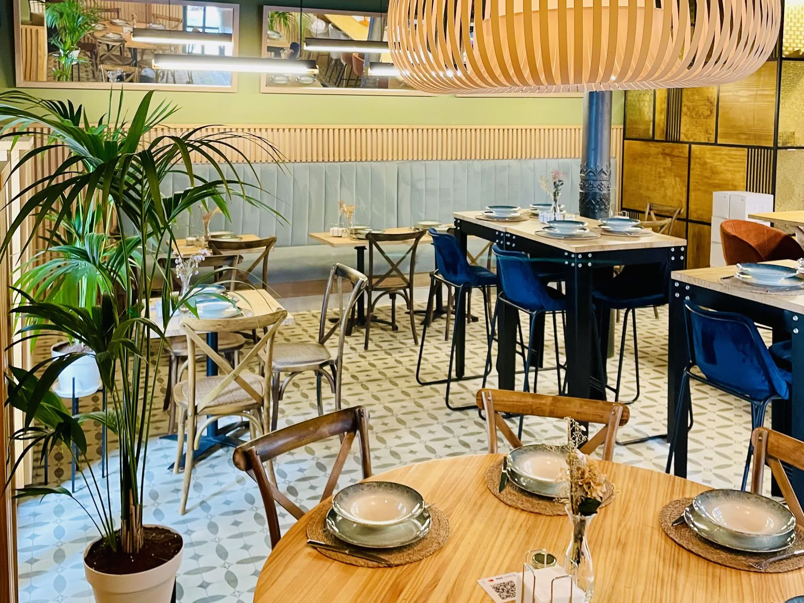
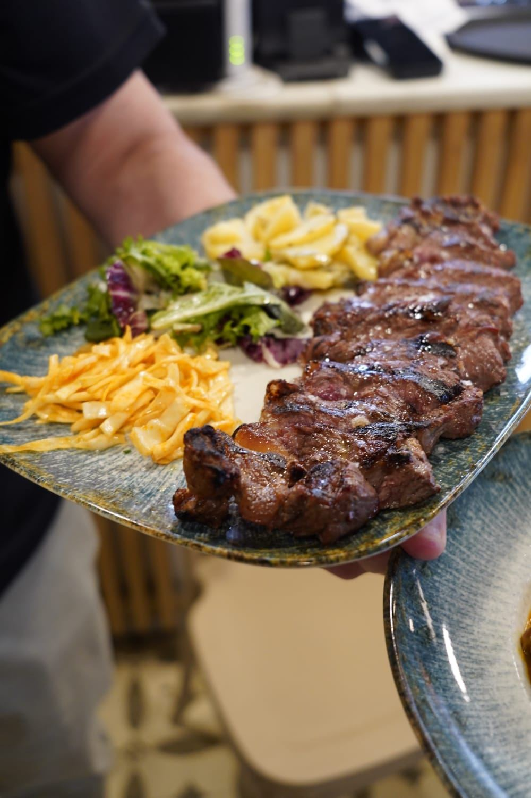
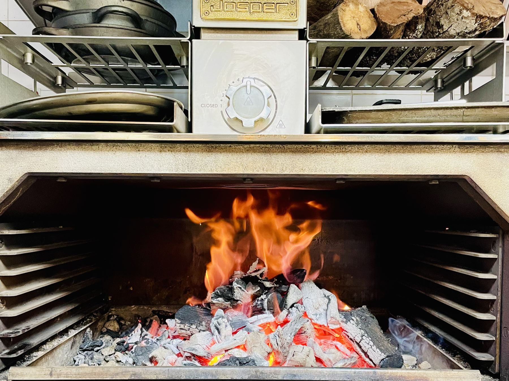
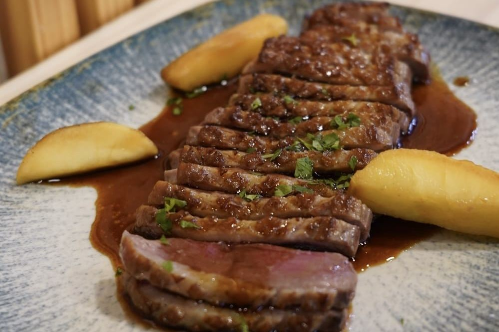
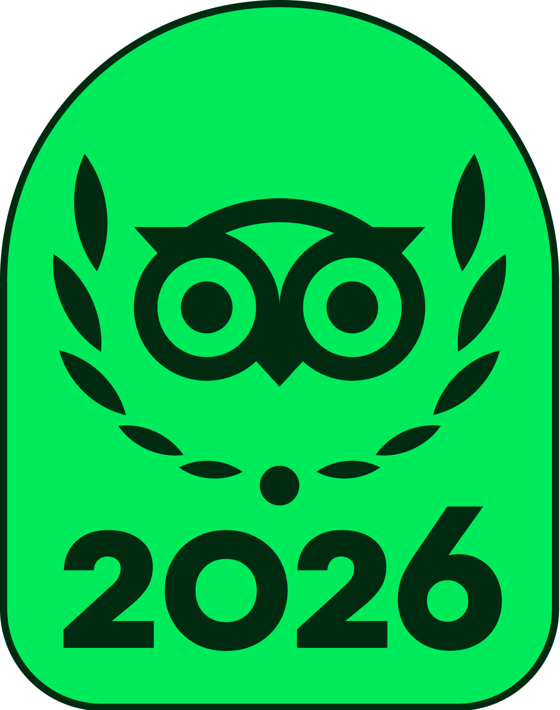
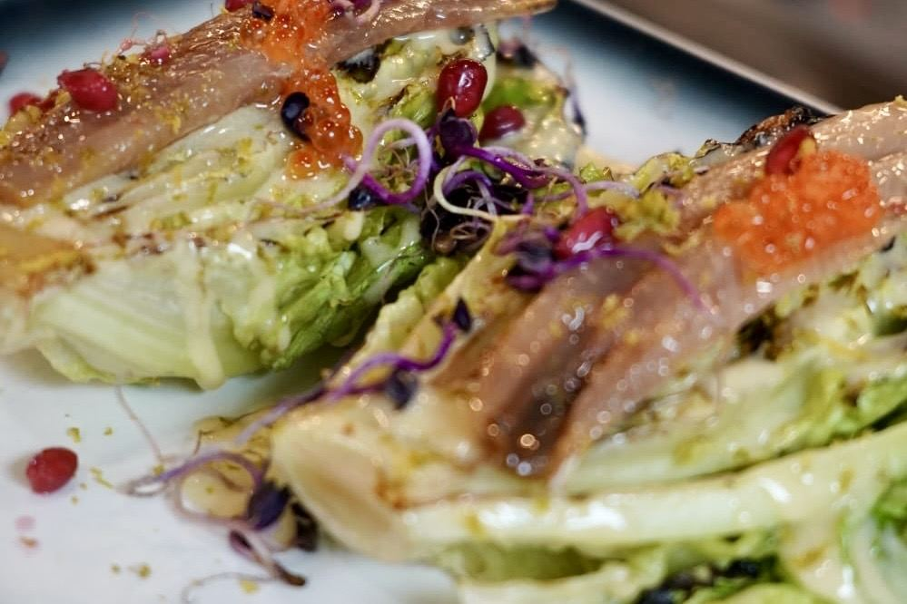
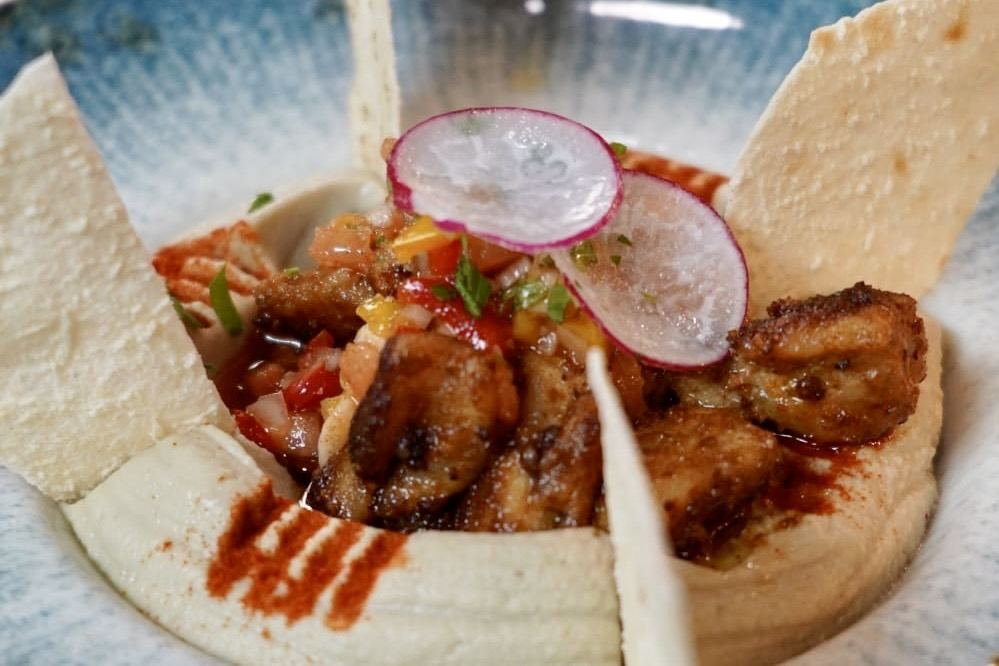

El magret
El plato que más nombran nuestros clientes en las reseñas.

Estamos en la calle Claudio Marcelo, 6, en el centro de Córdoba, a dos pasos del Templo Romano. Carnes, pescado del día y arroces se hacen en el horno Josper, a la brasa de carbón.
En la pizarra están los cortes y el pescado de cada semana, y buena parte de la carta se puede pedir sin gluten.


por el Josper

Con manzana caramelizada y salsa de soja y vino fino. El pato sale en 71 reseñas de Google.
22,95 €
Travellers' Choice 2026 de Tripadvisor.
Reserva por WhatsApp o por teléfono. Los fines de semana conviene reservar.
Carta de verano, de ejemplo para esta propuesta. Pregunta en sala qué platos se pueden pedir sin gluten.
Para compartir.
De temporada.
Con salsa para mojar pan.
Más cortes en la pizarra.
Las especialidades, en la pizarra.
Cocinados con carbón.
Caseros.
La pizarraCada semana, cortes de carne, pescado y paellas a la brasa que no están en la carta. Pregunta en sala o por WhatsApp.
Preguntar por WhatsAppTres menús para grupos. Los platos para compartir salen al centro de la mesa, uno de cada por cada cuatro comensales. La bebida va incluida.
30 €
Por persona. Todo para compartir.
40 €
Por persona. Entrantes para compartir y principal a elegir.
46 €
Por persona. Entrantes para compartir y principal a elegir.
Reserva de grupoDinos cuántos sois, el día y el menú, y te confirmamos la mesa. Si alguien tiene alergias, avísanos al reservar.
Reservar por WhatsAppKaribu tiene comedor, mesas altas y barra, a dos pasos del Templo Romano.
La cocina gira alrededor del horno Josper: carnes, pescado, verduras y arroces al carbón, con producto de temporada.
Dueño y cocinero de Karibu. Aquí van dos líneas tuyas: dónde aprendiste y por qué la brasa.
Luis cocinó fuera de España antes de volver a Córdoba. Cada hito enlaza al artículo de prensa que lo cuenta.
Luis empieza a trabajar en cocina al salir del Ejército.
Fuente: ABC, 18 de enero de 2023Luis funda Urban Paella en Dubái, un servicio de cocina española a domicilio. Hasta entonces era jefe de cocina de Casa de Tapas, también en Dubái.
Fuente: El Correo del Golfo, 11 de noviembre de 2015Josper nombra a Luis brand chef para Oriente Medio. Josper fabrica el horno de carbón que usamos en Karibu.
Fuente: El Correo del Golfo, 1 de marzo de 2016Urban Paella pasa de 100 servicios y 1.600 comensales en Emiratos.
Fuente: El Correo del Golfo, 26 de noviembre de 2017Luis abre Karibu en enero, en la esquina de Claudio Marcelo con García Lovera.
Fuente: ABC, 18 de enero de 2023El plato que más nombran nuestros clientes en las reseñas.

Somos de la Red Córdoba sin Gluten. Pregúntanos qué platos se pueden adaptar.

Cortes, pescado y paellas a la brasa que cambian cada semana.
Travellers' Choice 2026 de Tripadvisor.
Estos son los artículos que la prensa de Córdoba ha publicado sobre Karibu. Cada tarjeta enlaza al texto completo en la web del medio. La etapa de Luis en Dubái está en Nosotros.
«El fuego manda en Brasas Bar Karibu.»El Día de CórdobaLeer en El Día de Córdoba
«Tres años después de aquella apertura, la brasa continúa siendo el eje de su cocina.»ABCLeer en ABC
«Las cosas marchan bien, tenemos buena aceptación y estoy muy contento, la verdad»Luis Ezqueta, en ABCLeer en ABC
«Cuando hablamos de parrilla, la gente piensa en carne roja. Y voy a intentar romper este cliché con pescados y mariscos, arroces a la brasa o unos bizcochos»Luis Ezqueta, en ABCLeer en ABC
Tres menús de grupo, de 30 a 46 € por persona, con la bebida incluida.